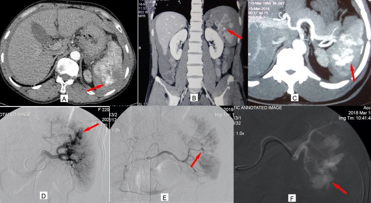
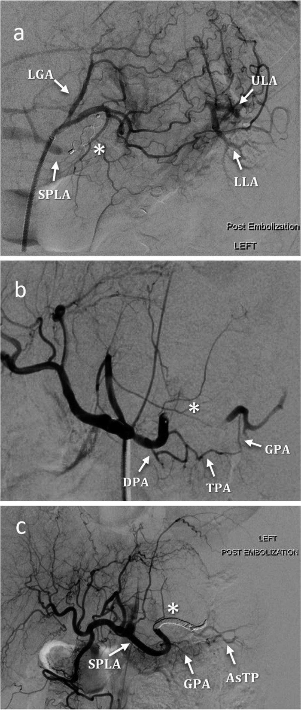
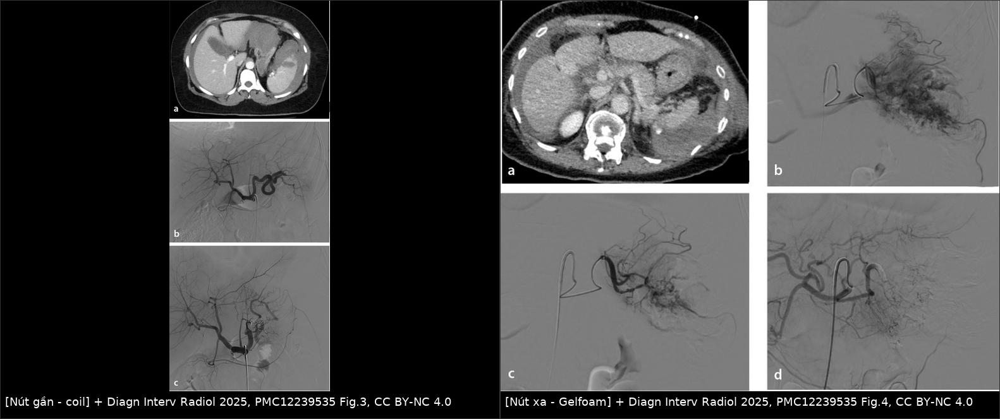
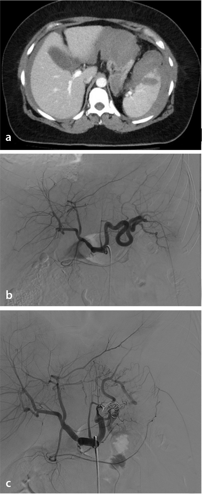
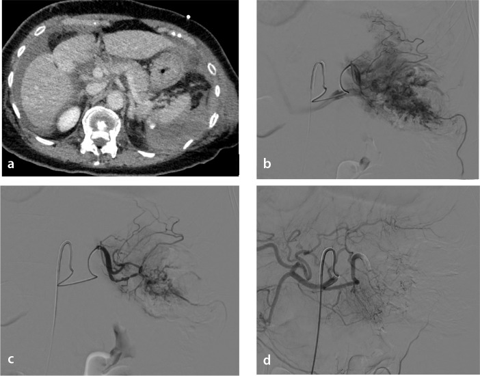

1848 — Nút mạch lách trong chấn thương: gần hay xa, khi nào cắt lách / Splenic artery embolization in blunt trauma
Tags: pattern:thoat-mach pattern:gia-phinh pattern:ro-dong-tinh-mach pattern:tu-mau pattern:vo-tang vung:lach vung:o-bung protocol:CTA-bung protocol:DSA-nut-mach score:AAST-OIS
Mức chắc chắn (certainty): tổng hợp y văn (literature synthesis) — số liệu từ 1 đoàn hệ 281 ca đa trung tâm Ý (PMC12470969), 1 loạt 72 ca một trung tâm cấp 1 (PMC12239535), 1 nghiên cứu 58 ca/59 lần nút gần theo vị trí tắc (PMC9391208), 1 loạt 50 ca phân độ lại theo AAST-OIS 2018 (PMC10178903), 1 phân tích ghép cặp 377 cặp nút mạch so với mổ (PMC11021531), 1 đoàn hệ quốc gia 8.195 ca theo dõi dài hạn (PMC11997966) và 1 tổng quan (PMC11703699). Phần nào là suy luận thực hành được ghi rõ.
1. Tổng quan bệnh học – cơ chế hình ảnh
- Chấn thương lách kín gây vỡ nhu mô và tổn thương mạch trong nhu mô: máu động mạch thoát ra ngoài lòng mạch nhưng còn trong bao lách → tụ máu dưới bao, hoặc thoát vào ổ bụng → tràn máu phúc mạc. Ba kiểu tổn thương mạch quyết định chỉ định nút mạch (PMC10178903):
- Thoát mạch hoạt động (active extravasation) — thuốc cản quang cùng đậm độ động mạch chủ, lan rộng dần ở thì muộn, hình dạng thay đổi.
- Giả phình (pseudoaneurysm) — túi tròn, đậm độ bằng động mạch, giữ nguyên hình dạng ở mọi thì; nguy cơ vỡ muộn ("second hit") nếu không nút.
- Rò động–tĩnh mạch (AV fistula) — tĩnh mạch lách/ cửa ngấm sớm ngay thì động mạch.
- Vì sao nút gần vẫn cứu được lách: thắt/nút động mạch lách thân chính làm giảm áp lực tưới máu toàn lách, nhưng nhu mô vẫn sống nhờ tuần hoàn bàng hệ: động mạch vành vị ngắn (từ động mạch vị trái), động mạch vị mạc nối trái, các nhánh tụy–lách. Đây là "giảm áp, không phải cắt máu" — nguyên lý khác hoàn toàn nút tạng đặc không có bàng hệ.
- Vì sao nút xa (siêu chọn lọc) lại dễ nhồi máu hơn: nút tại nhánh tận cắt luôn đường vào của đoạn nhu mô đó, không còn bàng hệ; đổi lại chỉ mất một phần nhu mô. Trên lâm sàng, tỉ lệ nhồi máu không khác nhau có ý nghĩa giữa hai kỹ thuật trong loạt 72 ca (17,6% nút gần bằng coil so với 20% nút xa bằng Gelfoam; p > 0,05) (PMC12239535).
- Vị trí "lý tưởng" của nút gần: giữa động mạch tụy lưng (dorsal pancreatic artery, DPA) và động mạch tụy lớn (great pancreatic artery, GPA) — gọi là Type II. Nút gần hơn DPA (Type I) hoặc xa hơn GPA (Type III) cho kết quả khác: trong 59 lần nút gần, thành công lâm sàng 100% ở Type I/II so với 88% ở Type III (p = 0,02); tưới máu lách còn lại 100% (Type I/II) vs 94% (Type III); không ca viêm tụy nào (PMC9391208).
- Số liệu nằm lòng:
- Cứu lách sau nút mạch: 90,3% (65/72) ở trung tâm cấp 1 (PMC12239535); 100% thành công kỹ thuật, 9,6% phải cắt lách sau nút, biến chứng 24,9% trong 281 ca đa trung tâm (nhồi máu lách 5,7%, chảy máu lại 3,2%) (PMC12470969).
- Nút gần 46,6%, nút xa 28,8%, phối hợp 24,6% trong thực hành đa trung tâm (PMC12470969).
- AAST-OIS 2018 nâng độ so với 1994: trong 50 ca, 27 ca tăng độ (2 ca độ II → IV; 15 ca III → IV; 4 ca IV → V) và toàn bộ 50 ca nút mạch thành công, không ca nào phải nút lại hay cắt lách (PMC10178903). Đây là lý do phải phân độ lại trước khi quyết định.
- Nút mạch so với mổ: cứu lách 87,1% vs 32,1% (aRR 2,84; 95% CI 2,29–3,51; p < 0,001); tử vong 11,6% vs 11,2% (aRR 0,64; 95% CI 0,38–1,09) — tức không tăng tử vong, tăng mạnh khả năng giữ lách (377 cặp ghép) (PMC11021531).
- Theo dõi dài hạn 8.195 ca: nút mạch và điều trị bảo tồn có nguy cơ nhiễm khuẩn và huyết khối thấp hơn cắt lách; cắt lách cũng có nguy cơ ung thư cao hơn điều trị bảo tồn (PMC11997966).
- Vì sao chụp CT đúng thì quan trọng: giả phình và rò động–tĩnh mạch có thể chỉ thấy ở thì động mạch, còn thoát mạch hoạt động rõ hơn ở thì muộn. Chụp một thì duy nhất là lý do hay bỏ sót tổn thương mạch.
2. Mẫu hình + chẩn đoán phân biệt theo hình ảnh (Gamut)
Trả lời 3 câu hỏi trên CTA trước khi gọi can thiệp:
- Có tổn thương mạch không? (thoát mạch / giả phình / rò ĐTM)
- Máu còn trong bao lách hay đã vào ổ bụng? (tụ máu dưới bao vs tràn máu phúc mạc)
- Bệnh nhân còn ổn định huyết động không? — mất ổn định là chỉ định mổ, không phải nút mạch.
Gamut theo mẫu hình:
- Nhu mô: đường vỡ (laceration) nông/sâu, vỡ nát lách (shattered spleen), nhồi máu do mạch bị đứt.
- Mạch: thoát mạch hoạt động, giả phình, rò động–tĩnh mạch, huyết khối nhánh.
- Quanh lách: tụ máu dưới bao, máu quanh lách, máu trong phúc mạc (kèm dịch quanh gan, túi cùng).
- Tổn thương phối hợp dễ bỏ sót: đuôi tụy, thận trái, cơ hoành trái, xương sườn dưới — nằm cùng cửa sổ chấn thương.
3. Bảng so sánh phân biệt (ma trận đối chiếu)
3a. Ba kiểu tổn thương mạch trên CTA
| Thực thể (entity) | Hình ảnh điển hình | Chốt vào (rule-in) | Chốt loại (rule-out) | Gợi ý xác nhận |
|---|---|---|---|---|
| Thoát mạch hoạt động | Ổ cản quang bằng đậm độ ĐMC, bờ không rõ, lan rộng và đổi hình ở thì muộn | Đậm độ = ĐMC + to ra ở thì muộn | Ổ giữ nguyên hình và đậm độ → giả phình | CTA 3 thì; DSA xác nhận |
| Giả phình | Túi tròn, bờ rõ, đậm độ bằng động mạch, không đổi giữa các thì | Bờ rõ + đậm độ mạch + cố định | Lan rộng/đổi hình → thoát mạch | CTA + DSA; theo dõi vỡ muộn |
| Rò động–tĩnh mạch | Tĩnh mạch ngấm sớm ngay thì động mạch; tĩnh mạch lách/cửa giãn | Ngấm sớm thì tĩnh mạch | Ngấm tĩnh mạch đúng thì cửa → bình thường | DSA thì động mạch; đo áp lực nếu cần |
| Tụ máu dưới bao | Hình thấu kính sát bờ lách, không ngấm cản quang | Không ngấm + ép nhu mô | Có ổ ngấm trong khối → nghĩ mạch | CTA; theo dõi kích thước |
| Vỡ nát lách | Nhu mô không còn cấu trúc, nhiều đường vỡ, máu quanh lách nhiều | Mất cấu trúc nhu mô + máu ổ bụng nhiều | Còn nhu mô nguyên → không phải | CTA; hội chẩn mổ |
3b. Chọn kỹ thuật (so sánh trực tiếp)
| Kỹ thuật | Chỉ định điển hình | Chốt vào (rule-in) | Chốt loại (rule-out) | Theo dõi |
|---|---|---|---|---|
| Nút gần (proximal SAE) | Chấn thương độ III–V có tổn thương mạch, nhiều ổ chảy máu, không chọn được nhánh | Nhiều nhánh/ổ, hoặc không đưa được catheter siêu chọn lọc | Một nhánh rõ, siêu chọn lọc được → cân nhắc nút xa | Tưới máu lách 94–100%; coil thường dùng |
| Nút xa (distal/superselective) | Một nhánh hoặc một vùng nhu mô tổn thương | Catheter vào được nhánh chảy máu, thấy ổ khu trú | Nhiều ổ rải rác → nút gần/phối hợp | Nhồi máu ổ khu trú; Gelfoam/coil nhỏ |
| Nút phối hợp | Tổn thương phức tạp, vừa thân vừa nhánh | Còn chảy máu sau nút gần, hoặc tổn thương hai vùng | Chảy máu đã cầm → dừng | Theo dõi sát; tỉ lệ dùng 24,6% |
| Cắt lách | Mất ổn định huyết động, vỡ nát lách, nút mạch thất bại | Tụt áp không đáp ứng hồi sức + máu ổ bụng nhiều | Ổn định + tổn thương mạch khu trú → nút mạch | Vaccine sau cắt lách |
| Bảo tồn không can thiệp | Độ I–II, không tổn thương mạch, ổn định | Không thoát mạch/giả phình + ổn định | Có tổn thương mạch → nút mạch | CTA lặp nếu đau tăng/tụt Hb |

Trên: (A) thoát mạch hoạt động, (B) giả phình, (C) rò động–tĩnh mạch trên MDCT. Dưới: (D–F) hình chụp mạch tương ứng. Nguồn: Int J Gen Med 2023 (PMC10178903) Fig. 1, CC BY-NC 4.0.
Ba kiểu nút gần: (a) Type I — gần hơn DPA; (b) Type II — giữa DPA và GPA (vị trí lý tưởng); (c) Type III — xa hơn GPA. Chú thích: LGA = động mạch vị trái, SPLA = động mạch lách, DPA = động mạch tụy lưng, GPA = động mạch tụy lớn, TPA = động mạch tụy ngang. Nguồn: CVIR Endovasc 2022 (PMC9391208) Fig. 2, CC BY 4.0.
Trái: nút gần bằng coil ở nữ 49 tuổi sau tai nạn xe — (a) CT đường vỡ độ III, (b) chụp mạch, (c) coil ở thân động mạch lách. Phải: nút xa bằng Gelfoam ở nữ 75 tuổi — (a) nhiều đường vỡ, (b–d) bơm chọn lọc và kiểm tra. Ảnh ghép letterbox, giữ nguyên tỷ lệ. Nguồn: Diagn Interv Radiol 2025 (PMC12239535) Fig. 3–4, CC BY-NC 4.0.4. Protocol chụp – can thiệp – theo dõi
- CTA bụng–chậu: thì động mạch (bắt tổn thương mạch) + tĩnh mạch cửa (đánh giá nhu mô, máu ổ bụng), ± thì muộn; lát 1–1,5 mm, dựng MPR. Phân độ AAST-OIS 2018 ngay trên CTA — nhớ rằng bản 2018 nâng độ so với 1994 ở phần lớn ca có tổn thương mạch (27/50 ca trong PMC10178903).
- Chỉ định nút mạch: bệnh nhân huyết động ổn định (hoặc ổn định sau hồi sức) + thoát mạch hoạt động, giả phình, rò ĐTM trên CTA; thực hành rộng rãi cho độ III–V có các dấu hiệu trên. Không chờ "độ cao" mới nút: độ thấp nhưng có giả phình vẫn là chỉ định.
- DSA: chụp thân tạng → động mạch lách; xác định DPA và GPA trước khi chọn vị trí. Nút gần: coil (hoặc vascular plug với mạch lớn — xem bài 1833); nút xa: coil nhỏ/Gelfoam siêu chọn lọc tại ổ chảy máu. Mục tiêu nút gần: Type II (giữa DPA và GPA).
- Sau nút: theo dõi Hb, đau, sốt, nôn; đau + sốt sau nút thường là hội chứng sau nút mạch (bài 1834) — phân biệt với áp-xe/nhồi máu bội nhiễm. Chụp CT lại khi đau tăng, sốt cao kéo dài, Hb tụt, hoặc nghi nhồi máu lan rộng (suy luận thực hành).
- Chức năng lách và vaccine: sau cắt lách phải tiêm phế cầu, não mô cầu, Haemophilus influenzae type b theo lịch; sau nút mạch, nếu còn nhu mô lách tưới máu tốt thì không tiêm thường quy (PMC11703699). Chưa có ngưỡng % nhồi máu thống nhất để quyết định tiêm sau nút mạch — nhiều trung tâm tiêm khi nhồi máu lan rộng hoặc phải cắt lách bổ sung; ghi rõ chưa rõ ngưỡng.
- Theo dõi dài hạn: nút mạch giữ được chức năng lách và có nguy cơ nhiễm khuẩn/huyết khối thấp hơn cắt lách trong 8.195 ca (PMC11997966); vẫn cần tư vấn triệu chứng nhiễm khuẩn nặng và báo khi sốt cao không rõ nguồn.
flowchart TD
A[Chan thuong bung kin nghi vo lach] --> B{Huyet dong on dinh?}
B -->|Khong| C[Mo ngay: kiem soat chay mau]
B -->|Co| D[CTA bung 3 thi + phan do AAST-OIS 2018]
D --> E{Co thoat mach, gia phinh hoac ro DTM?}
E -->|Khong| F[Bao ton + theo doi: CTA lap khi xau di]
E -->|Co| G{DSA: chon duoc nhanh chay mau?}
G -->|Co, mot o| H[Nut xa sieu chon loc: coil nho/Gelfoam]
G -->|Khong, nhieu o| I[Nut gan Type II: giua DPA va GPA]
H --> J{Con chay mau?}
I --> J
J -->|Co| K[Nut phoi hop hoac mo]
J -->|Khong| L[Theo doi: Hb, dau, sot; CT lai khi xau]
L --> M{Con nhu mo tach tuoi tot?}
M -->|Co| N[Khong tiem vaccine thuong quy]
M -->|Khong ro / nhoi mau rong| O[Hoi chan: tiem vaccine, theo doi OPSI]
5. Biến thể bình thường và cạm bẫy
- "Blush" thoáng qua vs thoát mạch thật: ổ ngấm nhỏ, mất đi ở thì muộn và không đổi hình thường là bình thường/giả ảnh; thoát mạch thật to ra, đổi hình. Đừng nút chỉ vì một đốm sáng.
- Giả phình chỉ thấy ở thì muộn: nếu chỉ chụp thì động mạch, một số giả phình nhỏ có thể bị bỏ qua; ngược lại, chụp quá sớm có thể bỏ sót thoát mạch chậm. Luôn đọc cả 3 thì.
- CT âm nhưng vẫn có chỉ định chụp mạch? Trong 281 ca, 14,2% được chụp mạch dù CT âm, và 10% nhóm này phải cắt lách (PMC12470969) — nhưng đây là thực hành của trung tâm, không phải khuyến cáo nút mạch khi CT âm; quyết định theo lâm sàng + Hb + huyết động.
- Nhồi máu lách sau nút: gặp 5,7% (đa trung tâm) đến 17,6–20% (loạt một trung tâm, có chụp kiểm tra); biểu hiện đau nhiều, sốt, tăng men gan/CRP — dễ nhầm áp-xe hoặc hội chứng sau nút. Đừng dẫn lưu vô ích một ổ nhồi máu vô khuẩn.
- Nút gần quá cao (Type I) hoặc quá thấp (Type III): Type III có thành công lâm sàng 88% so với 100% Type I/II, và tưới máu còn lại 94% (PMC9391208) — vị trí đặt coil quyết định kết quả, không phải "nút gần là xong".
- Viêm tụy sau nút: hiếm trong loạt 59 ca (0 ca), nhưng nút quá gần các nhánh tụy hoặc tắc nhầm nhánh tụy vẫn có thể xảy ra — kiểm tra lại giải phẫu biến thể (DPA xuất phát từ thân tạng) trước khi thả coil (PMC9391208).
- Bỏ sót tổn thương phối hợp: đuôi tụy, thận trái, cơ hoành — "satisfaction of search" sau khi thấy máu quanh lách.
6. Tự lượng giá — Blind Quiz
Ca 1 — Nam 30 tuổi, tai nạn xe máy, huyết động ổn định sau hồi sức. CTA bụng có 3 ổ bất thường trong lách.
- Câu hỏi: Gọi tên 3 kiểu tổn thương (A–C). Kiểu nào nguy cơ vỡ muộn? Có phải tất cả đều cần nút mạch?
Bấm để hiện đáp án (findings + chẩn đoán)
- Findings: (A) thoát mạch hoạt động — ổ cản quang lan rộng, đổi hình; (B) giả phình — túi tròn, bờ rõ, giữ nguyên; (C) rò động–tĩnh mạch — tĩnh mạch ngấm sớm thì động mạch.
- Nguy cơ vỡ muộn: giả phình (và rò ĐTM lớn) — cần nút dù bệnh nhân đang ổn định.
- Không phải mọi ổ đều cần nút: ổ ngấm nhỏ mất ở thì muộn có thể chỉ là giả ảnh; nhưng cả 3 kiểu trong hình đều là tổn thương mạch thật → chỉ định nút mạch.
- Nguồn ảnh: Int J Gen Med 2023 (PMC10178903) Fig. 1, CC BY-NC 4.0.
Ca 2 — Nữ 49 tuổi, đụng xe, CTA: đường vỡ độ III + nhiều ổ chảy máu nhỏ. Chụp mạch: không siêu chọn được từng nhánh.

- Câu hỏi: Chọn nút gần hay xa? Đặt coil ở đâu để giữ tưới máu lách và tránh nhánh tụy?
Bấm để hiện đáp án
- Findings: (a) đường vỡ độ III; (b) động mạch lách; (c) coil ở thân động mạch lách — nút gần.
- Chọn nút gần vì nhiều ổ, không siêu chọn được; mục tiêu Type II: giữa DPA và GPA để giữ nhánh tụy và tuần hoàn bàng hệ.
- Cứu lách của kỹ thuật nút gần bằng coil trong loạt này 94,1%, nhồi máu 17,6% (PMC12239535).
- Nguồn ảnh: Diagn Interv Radiol 2025 (PMC12239535) Fig. 3, CC BY-NC 4.0.
Ca 3 — Nữ 75 tuổi, nhiều đường vỡ lách, một ổ chảy máu khu trú ở cực dưới. Catheter vào được nhánh nuôi ổ đó.

- Câu hỏi: Kỹ thuật nào? Vì sao không nút thân chính? Nguy cơ cần theo dõi?
Bấm để hiện đáp án
- Findings: (a) nhiều đường vỡ; (b–d) bơm chọn lọc vào nhánh nuôi ổ chảy máu và kiểm tra sau nút — nút xa bằng Gelfoam.
- Vì sao: ổ khu trú, siêu chọn được → giữ tối đa nhu mô; nút thân chính không cần thiết.
- Nguy cơ: nhồi máu ổ khu trú (20% trong nhóm nút xa Gelfoam), đau/sốt sau nút; theo dõi Hb, CT lại nếu xấu đi.
- Nguồn ảnh: Diagn Interv Radiol 2025 (PMC12239535) Fig. 4, CC BY-NC 4.0.
Bài liên quan chéo
- 1833 – Vascular plug trong nút mạch tạng
- 1834 – Hội chứng sau nút mạch: viêm lành tính vs nhiễm trùng/áp-xe
- 1835 – Thiếu máu ruột sau nút mạch mạc treo
- 1836 – Rò động–tĩnh mạch tạng sau chấn thương
- 101 – Protocol đa thì bụng
- 140 – Lách tăng đậm độ
- 146 – Huyết khối tĩnh mạch lách và nhồi máu lách
- 192 – Splenosis và lách phụ sau cắt lách
Ảnh
- 4 ảnh gốc + 1 ảnh ghép (
composite_proximal-vs-distal.jpg, tạo bằngtools/make_composite.py, letterbox giữ tỷ lệ). Giấy phép từng file trongimages/CREDITS.md.
Không dùng để chẩn đoán độc lập khi chưa có người hướng dẫn.